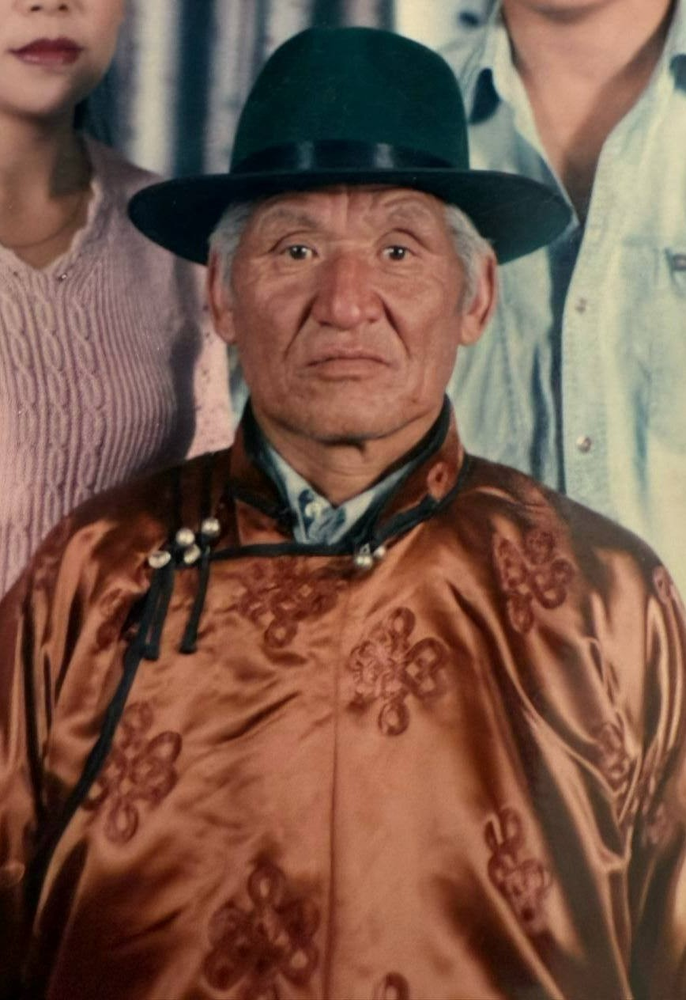
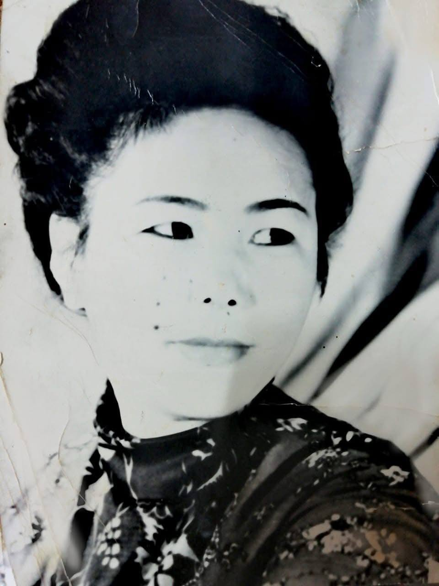
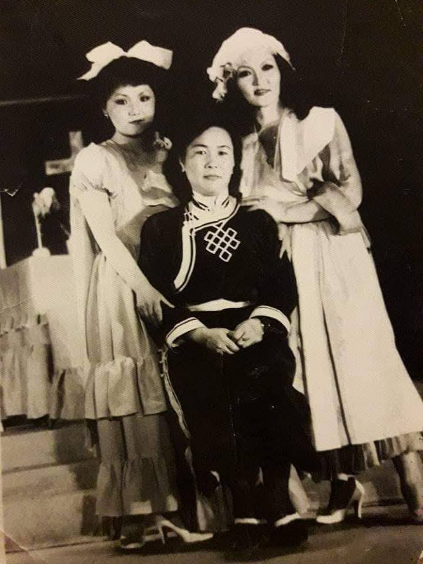
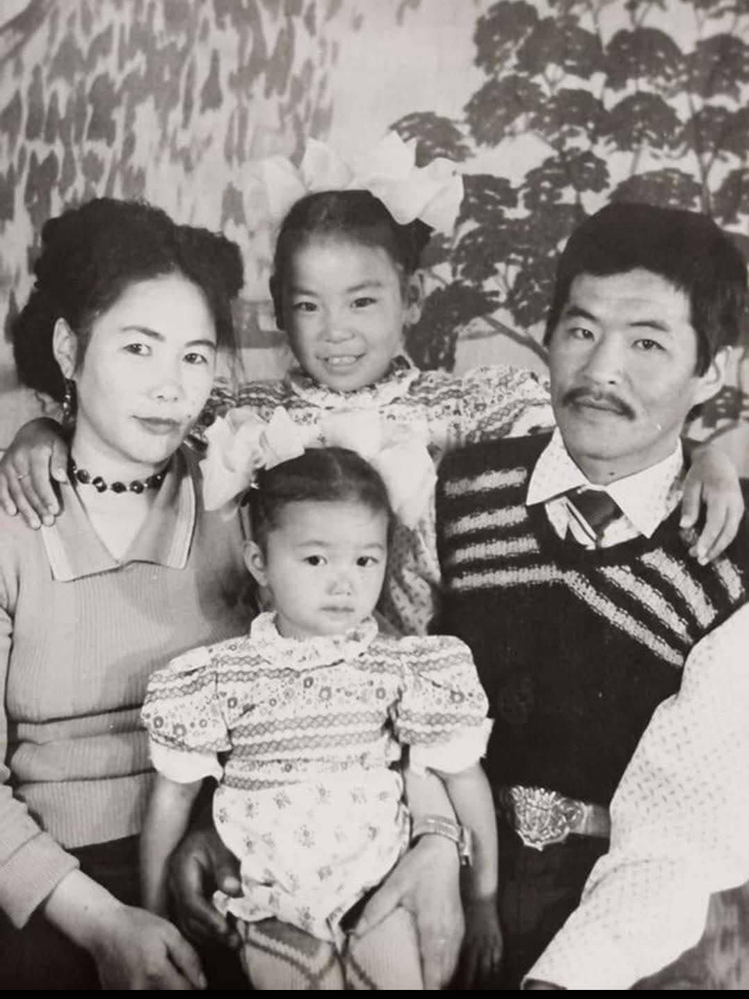
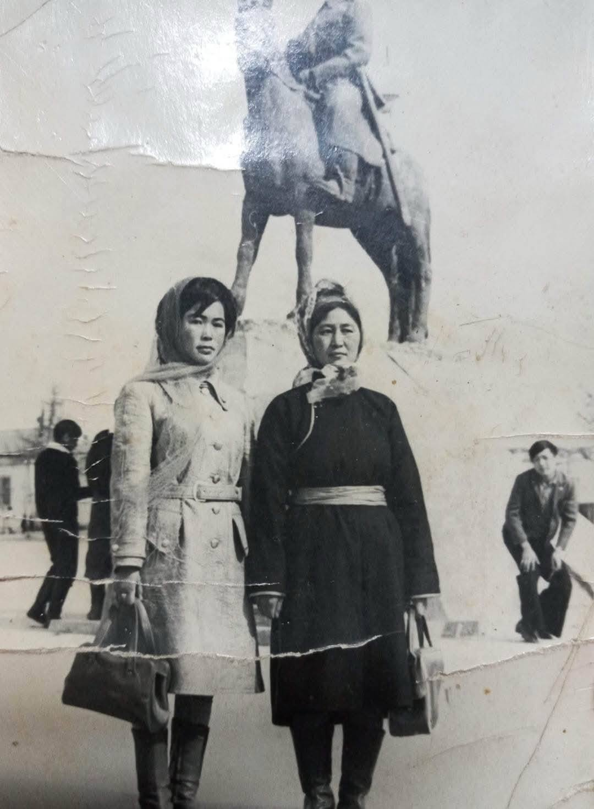

ӨВӨӨ
Осоржамц овогтой Балдан
Амьдралын замнал
1949 онд цэргийн албанд татагдаж, 1952 онд цэргийн албаа хааж ирсэн. Түүнийг буцаж ирэхэд ээж Цэнд нь нас барсан байв.
1960 оноос Эрдэнэт хотын Бааз-35-д жолоочоор ажиллаж байсан. 1966 онд Дугар овогтой Наранцэцэгтэй гэр бүл болсон.
2014 оны 5-р сарын 27-нд таалал төгссөн.

ЭМЭЭ
Дугар овогтой Наранцэцэг
Амьдрал ба ажил хөдөлмөр
Бага насандаа сургуульд суралцаж, гуравдугаар анги төгссөн. Багаасаа хөдөлмөр эрхэлж, 10 орчим наснаасаа 17 нас хүртлээ нэгдлийн адуу маллаж байсан.
Хожим Эрдэнэт хотын Хөгжимт драмын театрын оёдол, урлангийн ажилтнаар ажиллаж, тайзны хувцас урладаг байв.
Үр хүүхдүүд
Нөхөр О.Балдантай хамт найман хүүхэд өсгөж хүмүүжүүлсэн.
2016 оны 12-р сарын 16-нд таалал төгссөн.
Эхийн талын гэр бүлийн дурсамж
Энд өвөө, эмээ болон үр хүүхдүүдийн хамтын зургийг байрлуулна.


